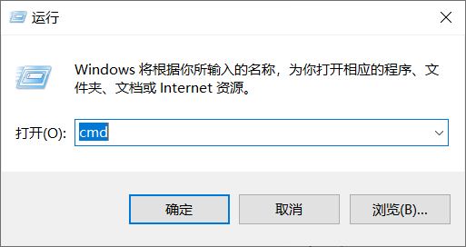
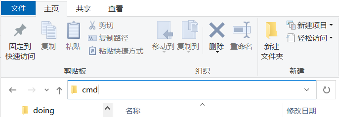
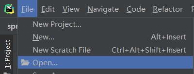
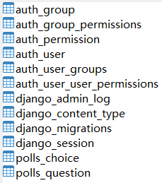
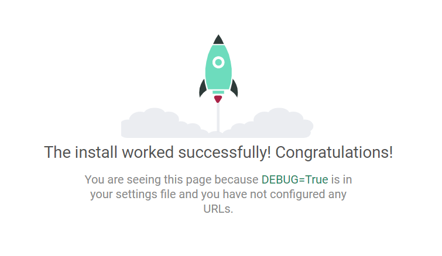

2 Django搭建示例项目实战与避坑细节¶

Django 开发项目是很快的，有多快？看完本篇文章，你就知道了。
安装 Django¶
前提条件：已安装 Python。
Django 使用 pip 命令直接就可以安装：
pip install django
如果安装失败，很可能是因为网络连接超时了，试试国内镜像：
pip install --default-timeout=6000 -i https://pypi.tuna.tsinghua.edu.cn/simple django
这条命令同时延长了超时时间，提高成功率。
安装完成后，通过 django-admin --version 这条命令验证。
创建 project¶
按住 Windows 键 + R，输入 cmd 回车，接着 cd 到任意目录：

或者先打开目录窗口，在地址栏输入 cmd 回车，不需要 cd（推荐）：

在命令行窗口输入命令创建 project：
django-admin startproject mysite
目录结构如下（注意有 2 个 mysite 哦）：
mysite/
manage.py
mysite/
__init__.py
settings.py
urls.py
asgi.py
wsgi.py
创建 app¶
Django 项目由 1 个 project 和多个 app 组成。project 存放项目配置，app 是网站各个功能的具体实现。
app 的放置目录没有限制，这里先放在和 mysite 的同级目录中，先进入外层的 mysite 文件夹：
cd mysite
输入命令创建：
django-admin startapp polls
目录结构如下：
mysite/
polls/
__init__.py
admin.py
apps.py
migrations/
__init__.py
models.py
tests.py
views.py
mysite/
manage.py
使用 cmd 创建完 project 和 app 以后，就可以打开 PyCharm，再 Open mysite 项目了：

为了让 app 和 project 关联起来，需要在 mysite/settings.py 文件中添加配置：
INSTALLED_APPS = [
'django.contrib.admin',
'django.contrib.auth',
'django.contrib.contenttypes',
'django.contrib.sessions',
'django.contrib.messages',
'django.contrib.staticfiles',
'polls.apps.PollsConfig', # 添加
]
在 polls/models.py 文件中添加数据模型：
from django.db import models
class Question(models.Model):
question_text = models.CharField(max_length=200)
pub_date = models.DateTimeField('date published')
class Choice(models.Model):
question = models.ForeignKey(Question, on_delete=models.CASCADE)
choice_text = models.CharField(max_length=200)
votes = models.IntegerField(default=0)
连接 MySQL¶
前提条件：已安装 MySQL，创建好数据库。
Django 默认使用轻量级数据库 SQLite，我们切换为常用的 MySQL。
修改 mysite/settings.py 中的数据库配置：
DATABASES = {
'default': {
'ENGINE': 'django.db.backends.mysql',
'HOST': '主机',
'PORT': 端口,
'NAME': '数据库名',
'USER': '用户名',
'PASSWORD': '密码'
}
}
Django 默认通过底层调用 mysqlclient 这个库和 MySQL 交互。但是 mysqlclient 非常不好安装！我们改用 pymysql。
先安装：
pip install pymysql
然后在与 mysite/settings.py 文件同级的 __init__ 文件中添加：
import pymysql
pymysql.version_info = (1, 4, 0, "final", 0)
pymysql.install_as_MySQLdb()
数据迁移¶
数据迁移，指的是把代码中的数据模型，迁移到数据库中，创建相应的表结构。
第一步，告诉 Django 数据模型有更新：
python manage.py makemigrations polls
执行后输出：
Migrations for 'polls':
polls/migrations/0001_initial.py
- Create model Question
- Create model Choice
第二步，执行数据迁移同步：
python manage.py migrate
执行后输出：
Operations to perform:
Apply all migrations: admin, auth, contenttypes, polls, sessions
Running migrations:
Rendering model states... DONE
Applying polls.0001_initial... OK
数据库表就创建好了：

启动项目¶
万事俱备，只差 1 条启动命令，在根目录执行：
python manage.py runserver
访问 http://127.0.0.1:8000/，就可以看到来自 Django 老铁的这发火箭了：

小结¶
本文是对《匆匆一眼》文章的补充。介绍了如何安装 Django，创建 Django 的 project 和 app，连接 MySQL，执行数据迁移，最后启动项目的实际操作步骤。思路很清晰。整体流程清楚了，可这些文件都是干嘛的呢？
参考资料：